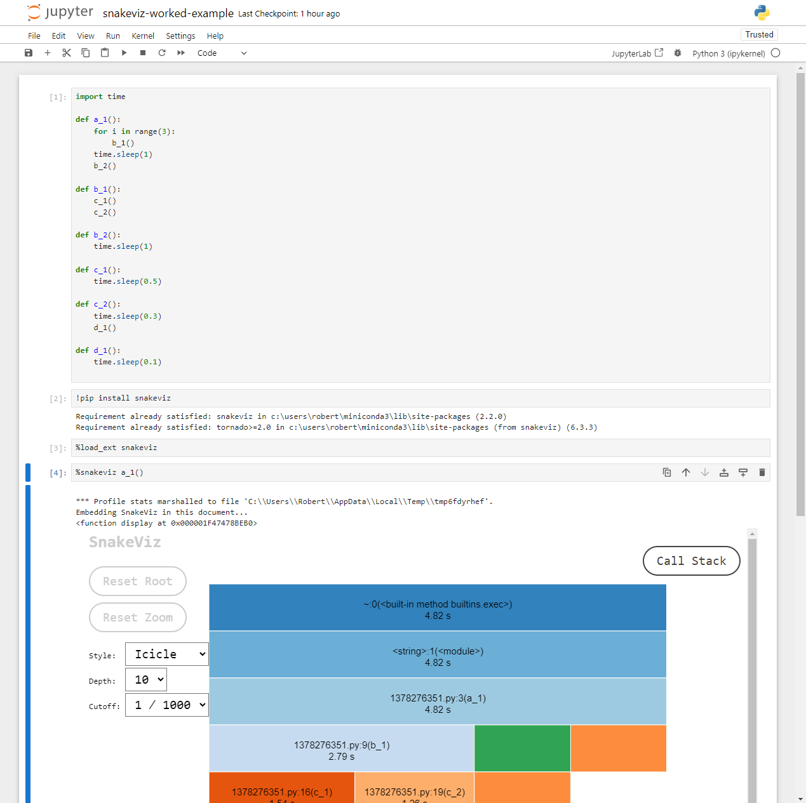
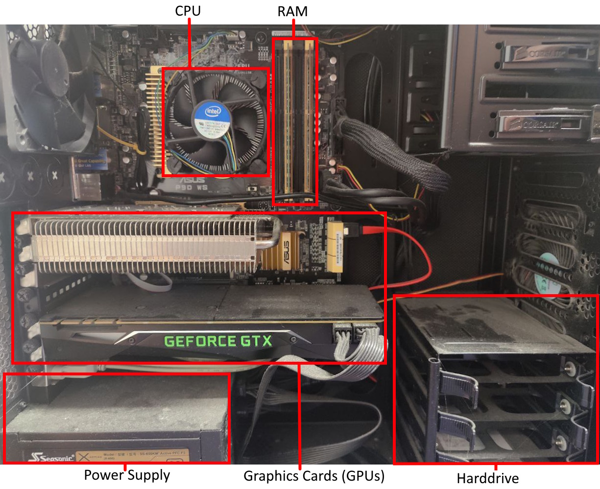

Image 1 of 1: ‘A viztracer timeline of the execution of the Pred-Prey exercise from later in the course. There is a shallow repeating pattern on the left side which corresponds to model steps, the right side instead has a range of 'icicles' which correspond to the deep call hierarchies of matplotlib generating a graph.’
An example timeline visualisation provided by
viztracer/vizviewer.
Image 1 of 1: ‘A greyscale diagram showing a (call)stack, containing 5 stack frame. Two additional stack frames are shown outside the stack, one is marked as entering the call stack with an arrow labelled push and the other is marked as exiting the call stack labelled pop.’
A diagram of a call stack
Figure 2
Image 1 of 1: ‘A web page, with a central diagram representing a call-stack, with the root at the top and the horizontal axis representing the duration of each call. Below this diagram is the top of a table detailing the statistics of individual methods.’
An example of the default ‘icicle’ visualisation
provided by snakeviz.
Figure 3
Image 1 of 1: ‘The snakeviz icicle visualisation for the worked example Python code.’
An icicle visualisation provided by
snakeviz for the above Python code.
Figure 4
Image 1 of 1: ‘A Jupyter notebook showing the worked example profiled with snakeviz.’

The worked example inside a notebook.
Figure 5
Image 1 of 1: ‘A sunburst visualisation for the worked example Python code.’
An sunburst visualisation provided by
snakeviz for the worked example’s Python code.
Figure 6
Image 1 of 1: ‘The top 9 rows of the table shown by snakeviz when profiling predprey.py. The top row shows that predprey.py:278(eaten) was called 1,250,000 times, taking a total time of 8 seconds. The table is ordered in descending total time, with the next row taking a mere 0.74 seconds.’
The top of the table shown by snakeviz.
Figure 7
Image 1 of 1: ‘A line graph plotting population over time through 250 steps of the pred prey model. Grass/20, shown in green, has a brief dip in the first 30 steps, but recovers holding steady at approximately 240 (4800 agents). Prey, shown in blue, starts at 200, quickly drops to around 185, before levelling off for steps and then slowly declining to a final value of 50. The data for predators, shown in red, has significantly more noise. There are 50 predators to begin, this rises briefly before falling to around 10, from here it noisily grows to around 70 by step 250 with several larger declines during the growth.’
predprey_out.png as produced by the
default configuration of predprey.py.
Image 1 of 1: ‘A screenshot of the `line_profiler` output from the previous code block, where the code within the line contents column has basic highlighting.’
Rich (highlighted) console output provided by
line_profiler for the above FizzBuzz profile code.
Figure 2
Image 1 of 1: ‘A screenshot of the line_profiler output from the previous code block inside a Jupyter notebook.’
Output provided by line_profiler
inside a Juypter notebook for the above FizzBuzz profile code.
Image 1 of 1: ‘A line graph displaying the relationship between the number of calls to append() and the number of internal resizes of a CPython list. It has a logarithmic relationship, at 1 million appends there have been 84 internal resizes.’
The relationship between the number of appends
to an empty list, and the number of internal resizes in CPython.
Figure 2
Image 1 of 1: ‘A diagram demonstrating how the keys (hashes) 37, 64, 14, 94, 67 are inserted into a hash table with 11 indices. This is followed by the insertion of 59, 80 and 39 which require linear probing to be inserted due to collisions.’
An visual explanation of linear probing, CPython
uses an advanced form of this.
Image 1 of 1: ‘An annotated photo of inside a desktop computer's case. The CPU, RAM, power supply, graphics cards (GPUs) and harddrive are labelled.’

An annotated photo of a computer’s
hardware.
Figure 2
Image 1 of 1: ‘An abstract representation of a CPU, RAM and Disk, showing their internal caches and the pathways data can pass.’
An abstract diagram showing the path data takes
from disk or RAM to be used for computation.
Figure 3
Image 1 of 1: ‘A horizontal bar chart displaying the relative latencies for L1/L2/L3 cache, RAM, SSD, HDD and a packet being sent from London to California and back. These latencies range from 1 nanosecond to 140 milliseconds and are displayed with a log scale.’
A graph demonstrating the wide variety of
latencies a programmer may experience when accessing data.


![A line graph plotting population over time through 250 steps of the pred prey model. Grass/20, shown in green, has a brief dip in the first 30 steps, but recovers holding steady at approximately 240 (4800 agents). Prey, shown in blue, starts at 200, quickly drops to around 185, before levelling off for steps and then slowly declining to a final value of 50. The data for predators, shown in red, has significantly more noise. There are 50 predators to begin, this rises briefly before falling to around 10, from here it noisily grows to around 70 by step 250 with several larger declines during the growth.](fig/predprey_out.png)